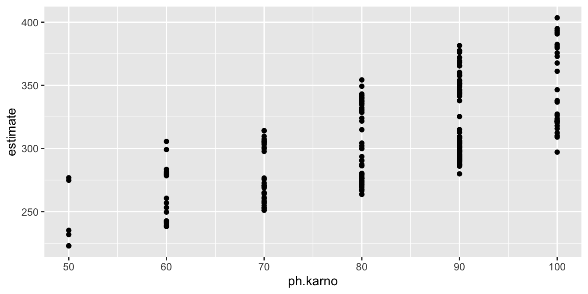

# generally useful packages
library(tidyverse)
library(marginaleffects)
library(modelsummary)Duration Models
In political science, it’s common to model duration outcomes. We’ll use two standard examples:
timein thecancerdata set (see?survival::cancer). This is the patient’s survival time in days.durationin thecoalitiondata set (see?ZeligData::coalition). This is the government duration in months.
Exponential Model
canc <- survival::cancer |>
mutate(sex = case_when(sex == 1 ~ "Male",
sex == 2 ~ "Female"))
glimpse(canc)Rows: 228
Columns: 10
$ inst <dbl> 3, 3, 3, 5, 1, 12, 7, 11, 1, 7, 6, 16, 11, 21, 12, 1, 22, 16…
$ time <dbl> 306, 455, 1010, 210, 883, 1022, 310, 361, 218, 166, 170, 654…
$ status <dbl> 2, 2, 1, 2, 2, 1, 2, 2, 2, 2, 2, 2, 2, 2, 2, 2, 2, 2, 2, 2, …
$ age <dbl> 74, 68, 56, 57, 60, 74, 68, 71, 53, 61, 57, 68, 68, 60, 57, …
$ sex <chr> "Male", "Male", "Male", "Male", "Male", "Male", "Female", "F…
$ ph.ecog <dbl> 1, 0, 0, 1, 0, 1, 2, 2, 1, 2, 1, 2, 1, NA, 1, 1, 1, 2, 2, 1,…
$ ph.karno <dbl> 90, 90, 90, 90, 100, 50, 70, 60, 70, 70, 80, 70, 90, 60, 80,…
$ pat.karno <dbl> 100, 90, 90, 60, 90, 80, 60, 80, 80, 70, 80, 70, 90, 70, 70,…
$ meal.cal <dbl> 1175, 1225, NA, 1150, NA, 513, 384, 538, 825, 271, 1025, NA,…
$ wt.loss <dbl> NA, 15, 15, 11, 0, 0, 10, 1, 16, 34, 27, 23, 5, 32, 60, 15, …To fit the exponential regression model to the cancer data, we can use the survreg() function in the {survival} package.
library(survival)For the survreg() function, we need to wrap the outcome in the Surv() function. This is unusual, but the reason will become clear in a bit.
fit_exp <- survreg(Surv(time) ~ age + sex + ph.karno, data = canc,
dist = "exp")We can print a table of coeffcients.
modelsummary(fit_exp)| (1) | |
|---|---|
| (Intercept) | 5.522 |
| (0.728) | |
| age | -0.004 |
| (0.008) | |
| sexMale | -0.167 |
| (0.136) | |
| ph.karno | 0.006 |
| (0.005) | |
| Num.Obs. | 227 |
| AIC | 3057.0 |
| BIC | 3070.7 |
| RMSE | 206.52 |
QIs
We can use {marginaleffects} to compute the expected values for every row in the dataset.
p <- predictions(fit_exp) |>
glimpse()Rows: 227
Columns: 19
$ rowid <int> 1, 2, 3, 4, 5, 6, 7, 8, 9, 10, 11, 12, 13, 14, 15, 16, 17, 1…
$ estimate <dbl> 287.0263, 293.2519, 306.1110, 305.0182, 321.4492, 222.9138, …
$ std.error <dbl> 39.03179, 31.66833, 32.20693, 31.18595, 41.07116, 42.44826, …
$ statistic <dbl> 7.353655, 9.260099, 9.504508, 9.780630, 7.826641, 5.251424, …
$ p.value <dbl> 1.928586e-13, 2.042432e-20, 2.009957e-21, 1.363589e-22, 5.01…
$ s.value <dbl> 42.23752, 65.40827, 68.75333, 72.63501, 47.50389, 22.65964, …
$ conf.low <dbl> 210.5254, 231.1831, 242.9866, 243.8949, 240.9512, 139.7168, …
$ conf.high <dbl> 363.5272, 355.3207, 369.2354, 366.1415, 401.9472, 306.1109, …
$ inst <dbl> 3, 3, 3, 5, 1, 12, 7, 11, 1, 7, 6, 16, 11, 21, 12, 1, 22, 16…
$ time <dbl> 306, 455, 1010, 210, 883, 1022, 310, 361, 218, 166, 170, 654…
$ status <dbl> 2, 2, 1, 2, 2, 1, 2, 2, 2, 2, 2, 2, 2, 2, 2, 2, 2, 2, 2, 2, …
$ age <dbl> 74, 68, 56, 57, 60, 74, 68, 71, 53, 61, 57, 68, 68, 60, 57, …
$ sex <chr> "Male", "Male", "Male", "Male", "Male", "Male", "Female", "F…
$ ph.ecog <dbl> 1, 0, 0, 1, 0, 1, 2, 2, 1, 2, 1, 2, 1, NA, 1, 1, 1, 2, 2, 1,…
$ ph.karno <dbl> 90, 90, 90, 90, 100, 50, 70, 60, 70, 70, 80, 70, 90, 60, 80,…
$ pat.karno <dbl> 100, 90, 90, 60, 90, 80, 60, 80, 80, 70, 80, 70, 90, 70, 70,…
$ meal.cal <dbl> 1175, 1225, NA, 1150, NA, 513, 384, 538, 825, 271, 1025, NA,…
$ wt.loss <dbl> NA, 15, 15, 11, 0, 0, 10, 1, 16, 34, 27, 23, 5, 32, 60, 15, …
$ df <dbl> Inf, Inf, Inf, Inf, Inf, Inf, Inf, Inf, Inf, Inf, Inf, Inf, …ggplot(p, aes(x = ph.karno, y = estimate)) +
geom_point()
We can also compute the change in the duration as ph.karno changes from the 25th percentile to the 75th percentile.
summary(canc$ph.karno) Min. 1st Qu. Median Mean 3rd Qu. Max. NA's
50.00 75.00 80.00 81.94 90.00 100.00 1 avg_comparisons(fit_exp,
variables = list(ph.karno = c(75, 90)))
Estimate Std. Error z Pr(>|z|) S 2.5 % 97.5 %
29 24.5 1.18 0.237 2.1 -19.1 77.1
Term: ph.karno
Type: response
Comparison: 90 - 75Or we could compute the lift!
avg_comparisons(fit_exp,
variables = list(ph.karno = c(75, 90)),
comparison = "lift")Warning in sprintf("liftavg", 90, 75): 2 arguments not used by format 'liftavg'
Estimate Std. Error z Pr(>|z|) S 2.5 % 97.5 %
0.0994 0.0875 1.14 0.256 2.0 -0.0721 0.271
Term: ph.karno
Type: response
Comparison: liftavgTwo Problems
- First, we have censoring. If someone is still alive at the end of our study, they didn’t live X days, they lived longer than X days.
- Second, maybe the exponential distribution isn’t the best match to the data… are there others?
Censoring
It seems like the data collection for the cancer study lasted about 1,000 days.
- If patients were still alive at the end of the study, then
timewas recorded as the number of days they survived so far andstatuswas coded as 1. - If patients died during the study, then
timewas recorded as the number of days they survived andstatuswas coded as 2.
Usual Likelihood
Let’s let \(y_i = t_i\) for this type of data, since we think of the outcome as the time something lasts.
\[ t_i \sim \text{exponential}(\mu_i) \]
\[ \mu_i = \exp(X_i\beta) \]
Note different parameterizations of the exponential distribution.
using the mean: \(f(x; \mu) = \frac{1}{\mu} e^{-\frac{x}{\mu}}\)
using the rate: \(f(x; \lambda) = \lambda e^{-\lambda x}\)
Exponential model with mean \(\mu_i\): \(y_i \sim \text{exponential}(\mu_i)\)
Mean as a function of covariates: \(\mu_i = \exp(X_i\beta)\)
PDF: \(f(y_i; \mu_i) = \frac{1}{\mu_i} e^{-\frac{y_i}{\mu_i}}, \quad y_i \geq 0\)
Likelihood for \(N\) obs.: \(L(\beta; t) = \prod_{i=1}^N f(t_i; \mu_i)\)
We could also write as
\[ L(\beta; t) = \prod_{i=1}^N \frac{1}{\exp(X_i\beta)} e^{-\frac{t_i}{\exp(X_i\beta)}}. \]
Then the log-likelihood function is given by \[ \log L(\beta; t) = \log \left( \prod_{i=1}^N \frac{1}{\exp(X_i\beta)} e^{-\frac{t_i}{\exp(X_i\beta)}} \right). \]
\[ \log L(\beta; t) = \sum_{i=1}^N \log \left( \frac{1}{\exp(X_i\beta)} \right) + \sum_{i=1}^N \log \left( e^{-\frac{t_i}{\exp(X_i\beta)}} \right) \]
\[ \log L(\beta; t) = -\sum_{i=1}^N X_i\beta - \sum_{i=1}^N \frac{t_i}{\exp(X_i\beta)} \]
But importantly, this likelihood is wrong for censored observations.
Adjusting for Censoring
The survivor function, \(S(t)\), is defined as the probability of an event not occurring by time \(t\) (or occurring after time \(t\)).
For the exponential distribution, the survivor function is
\[ S(t) = \int_{t}^\infty f(t) dt= \int_{t}^\infty \frac{1}{\mu_i} e^{-\frac{t}{\mu}} dt = e^{-\frac{1}{\mu} t} \] Given data with uncensored and right-censored observations:
- Uncensored: \(\frac{1}{\mu_i} e^{-\frac{1}{\mu_i} t_i}\) for each observation at \(t_i\)
- Right-censored: \(e^{-\frac{1}{\mu_i} t_i^*}\) for each censored observation at \(t_i^*\)
Then we have the likelihood accounting for censoring
\[ L = \prod_{\text{uncensored } i} \overbrace{\left( \frac{1}{\mu_i} e^{-\frac{1}{\mu_i} t_i} \right)}^{\text{density}} \times \prod_{\text{right-censored } j} \overbrace{\left( e^{-\frac{1}{\mu_i} t_j^*} \right)}^{\text{probability}} \]
Taking the log, we have
\[ \log L = \sum_{\text{uncensored } i} \left( \log \frac{1}{\mu_i} - \frac{1}{\mu_i} t_i \right) + \sum_{\text{right-censored } j} \left( -\frac{1}{\mu_i} t_j^* \right) \]
Then we can substitute \(\mu_i = \exp(X_i \beta)\) and be on our way as usual.
Censoring is very common in duration models, so the survreg() function can easily accomodate censored observations. You simply supply a variable indicating censoring as the second argument to Surv().
Notice that status is coded as 1/2 rather than the usual 0/1. It’s worth highlighting this note from ?Surv.
The use of 1/2 coding for status is an interesting historical artifact. For data contained on punch cards, IBM 360 Fortran treated blank as a zero, which led to a policy within the Mayo Clinic section of Biostatistics to never use “0” as a data value since one could not distinguish it from a missing value. Policy became habit, as is often the case, and the use of 1/2 coding for alive/dead endured long after the demise of the punch cards that had sired the practice. At the time Surv was written many Mayo data sets still used this obsolete convention, e.g., the lung data set found in the package.
fit_exp_cens <- survreg(Surv(time, status) ~ age + sex + ph.karno, data = canc,
dist = "exp")We can compute our average first difference for a new model that accounts for censoring.
avg_comparisons(fit_exp_cens,
variables = list(pat.karno = c(75, 90)))
Estimate Std. Error z Pr(>|z|) S 2.5 % 97.5 %
0 NA NA NA NA NA NA
Term: pat.karno
Type: response
Comparison: 90 - 75We can compare the coefficient estimates from the two models.
modelsummary(list("Without Censoring" = fit_exp,
"With Censoring" = fit_exp_cens))| Without Censoring | With Censoring | |
|---|---|---|
| (Intercept) | 5.522 | 6.014 |
| (0.728) | (0.847) | |
| age | -0.004 | -0.011 |
| (0.008) | (0.009) | |
| sexMale | -0.167 | -0.471 |
| (0.136) | (0.167) | |
| ph.karno | 0.006 | 0.013 |
| (0.005) | (0.006) | |
| Num.Obs. | 227 | 227 |
| AIC | 3057.0 | 2303.4 |
| BIC | 3070.7 | 2317.1 |
| RMSE | 206.52 | 276.07 |
And we can compute the average first difference for both models
models <- list(exp = fit_exp,
exp_cens = fit_exp_cens)
results <- map_dfr(models,
~ avg_comparisons(.x, variables = list(ph.karno = c(75, 90))),
.id = "model")
results
Estimate Std. Error z Pr(>|z|) S 2.5 % 97.5 %
29.0 24.5 1.18 0.2368 2.1 -19.06 77.1
85.8 41.4 2.07 0.0382 4.7 4.68 166.9
Term: ph.karno
Type: response
Comparison: 90 - 75Understanding the Choice of Distribution
- Like with any probability model, we need to choose a distribution for our outcome variable \(t_i\) (usually \(y_i\)).
- We’ve been using exponential.
We have three quantities that describe the distribution
- hazard function: \(h(t) = \frac{f(t)}{S(t)} = \frac{f(t)}{1 - \int_{0}^{t} f(u) \, du}\)
- cumulative hazard function: \(H(t) = -\log(S(t)) = -\log\left(1 - \int_{0}^{t} f(u) \, du\right)\)
- survivor function: \(S(t) = 1 - F(t) = 1 - \int_{0}^{t} f(u) \, du\)
- original density: \(f(t) = h(t)S(t)\)
More Distributions
# Exponential
fit_exp <- survreg(Surv(time, status) ~ age + sex + ph.karno,
data = canc,
dist = "exp")
# Log-Normal
fit_ln <- survreg(Surv(time, status) ~ age + sex + ph.karno,
data = canc,
dist = "lognormal")
# Weibull
fit_wei <- survreg(Surv(time, status) ~ age + sex + ph.karno,
data = canc,
dist = "weibull")
# Rayleigh
fit_ray <- survreg(Surv(time, status) ~ age + sex + ph.karno,
data = canc,
dist = "rayleigh")
# Extreme Value (Gumbel)
fit_extr <- survreg(Surv(time, status) ~ age + sex + ph.karno,
data = canc,
dist = "extreme")
# Gaussian (Normal)
fit_gaus <- survreg(Surv(time, status) ~ age + sex + ph.karno,
data = canc,
dist = "gaussian")
# Logistic
fit_logis <- survreg(Surv(time, status) ~ age + sex + ph.karno,
data = canc,
dist = "logistic")
# Log-Logistic
fit_llogis <- survreg(Surv(time, status) ~ age + sex + ph.karno,
data = canc,
dist = "loglogistic")BIC(fit_exp, fit_ln, fit_wei, fit_ray, fit_extr,
fit_gaus, fit_logis, fit_llogis) |>
as_tibble(rownames = "model") |>
mutate(diff_min = BIC - min(BIC),
post_prob = exp(-0.5*diff_min)/sum(exp(-0.5*diff_min))) |>
arrange(BIC) # A tibble: 8 × 5
model df BIC diff_min post_prob
<chr> <dbl> <dbl> <dbl> <dbl>
1 fit_wei 5 2305. 0 7.53e- 1
2 fit_llogis 5 2307. 2.24 2.45e- 1
3 fit_exp 4 2317. 12.6 1.38e- 3
4 fit_ln 5 2326. 21.5 1.66e- 5
5 fit_ray 4 2354. 50.0 1.07e-11
6 fit_logis 5 2358. 53.6 1.70e-12
7 fit_gaus 5 2364. 59.0 1.16e-13
8 fit_extr 5 2443. 139. 5.88e-31You can see that the BIC strongly prefers the Weibull model or the log-logistic model over the others. It would be worthwhile to compare the predictive distributions. Unfortunately, there’s not a simple simulate() function that works with survreg() output.